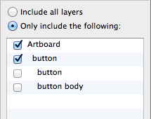

Sketch.app Advent Calender 2013 15日目の記事です。
今回は、Sketch.appのスライスについて解説していきます。
Sketchの基本。というSketch（Sketch 3）の基本操作にフォーカスした電子書籍をリリースしました。詳しくはこちらの「Sketchの基本。」のページをご覧ください。
この記事はSketch 2を元にした記事です。最新版の動作とは異なる可能性が高いため、参考程度にご覧ください。
Sketch.appのスライスは、書き出しフォーマットとその詳細を個別に設定できないことを除けば、割と使いやすくできています。その設定も結局は、JPEGminiやImageAlphaなどのツールを通すので、できないならできないでなんとかなります。 そのスライスを作成するには、書き出しモードから自分でスライスを設定するか、オブジェクトを基準にしてスライスを作成する方法の2つがあります。 自分でスライスを設定するには、まずは［File］から［Export…］を選び、書き出しモードにします。ショートカットはCommand＋Shift＋Eです。「Inspector」が「Slices」に変わっていれば、書き出しモードになっています。この状態でアートボード上をドラッグすれば、スライスを作成できます（ちなみに、スライス on スライスも可能です）。
書き出しモードにする際、スライスが1つも設定されていない場合は、「アートボードを基準にしたスライスを作りますか？」というダイアログが表示されます。アートボードを丸ごと書き出す場合は、「Create」を選んでください。
オブジェクトを基準にスライスを作成する場合は、オブジェクトを選択して［File］にある［Add Slice For Selection］を選びます（画像ではショートカットがありますが、個別で設定しているもので、デフォルトではありません）。通常はこちらを使うことが多いでしょう。
選択範囲から作成する場合は、オブジェクトごとにスライスが作成されます。グループ化されている場合は、グループで1スライスになります。スライス名はオブジェクト名がそのままは反映されますので、きちんと名前を付けておきましょう。
書き出しモードはスライス部分以外をクリックすると、書き出しモードが終了してしまうので、クリックしたい衝動に駆られたら、迷わずスライスをクリックしましょう。Tabキーでの選択や、レイヤーリストがスライスリストになっているので、ここでも選択できます。
Slicesパネル
Export All
現在のドキュメントで設定されているスライスをすべて書き出します。ちなみに、ボタンを押さなくてもEnterキーで保存ダイアログを表示できます。ただし、他のアートボードで設定しているスライスも書き出されるので、ご注意を。
スライス名とサイズ・座標
現在選択しているスライスの名前やサイズ・座標です。ここで変更すれば、スライスの変更ができます。
書き出すオブジェクト（レイヤー）の選択

「Include all layers」を選択すると、範囲内のオブジェクトを全て含んだ状態で書き出します。
「Only include the following」は、下のリストで選択したオブジェクトのみを書き出します。リストには、選択しているスライスの範囲にかかっているオブジェクトが表示されます。
本来は透過させるオブジェクトでも、作成中は背景を入れたりすることがありますが、そういう場合に背景のチェックマークを外しておけば、背景のない状態で書き出しができます。
が、スライスが作成された直後の状態で、親になっているグループにチェックが入っていれば、それに内包されるオブジェクトにチェックがなくとも全て書き出されます。一部だけを書き出したい場合は、親についているチェックを一旦外し、書き出したい部分だけにチェックを入れる必要があります。
Trim transparent pixels
ここをチェックしておくと、オブジェクトの境界より大きなスライスを作成していても、透明部分のピクセルを自動的にカットしてくれます。正確にスライスを作成しなくても大丈夫です。
Also export as
そのままですが、@2xまたは@1xを同時に書き出す場合にチェックしておきます。@1xで作成している場合は「Double size」を、@2xで作成している場合は「Half size」を選択します。
プレビュー / 書き出し / 他のアプリへ
左は小さくて見えづらいですが、現在選択しているスライスのサムネールです。これ自体をドラッグして、特定のフォルダに入れたりアートボードに配置したりできます。
「Export」ボタンで現在のスライスを書き出します。ダイアログが表示されるので、書き出しフォーマットを選択して書き出しましょう。書き出せるフォーマットは「PNG」「JPG」「TIFF」「PDF」「EPS」「SVG」です。
右はメールやメッセージ、Twitterなどに渡すことができます。
Create Slice form Artboards

アートボードの大きさを基準にしたスライスを作成できます。